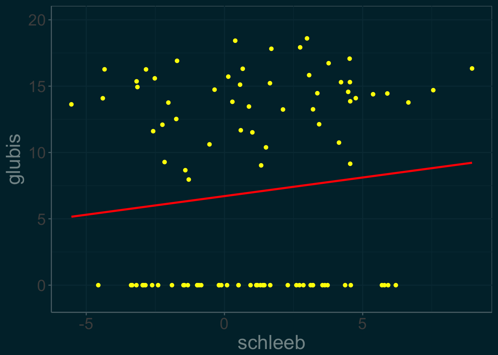
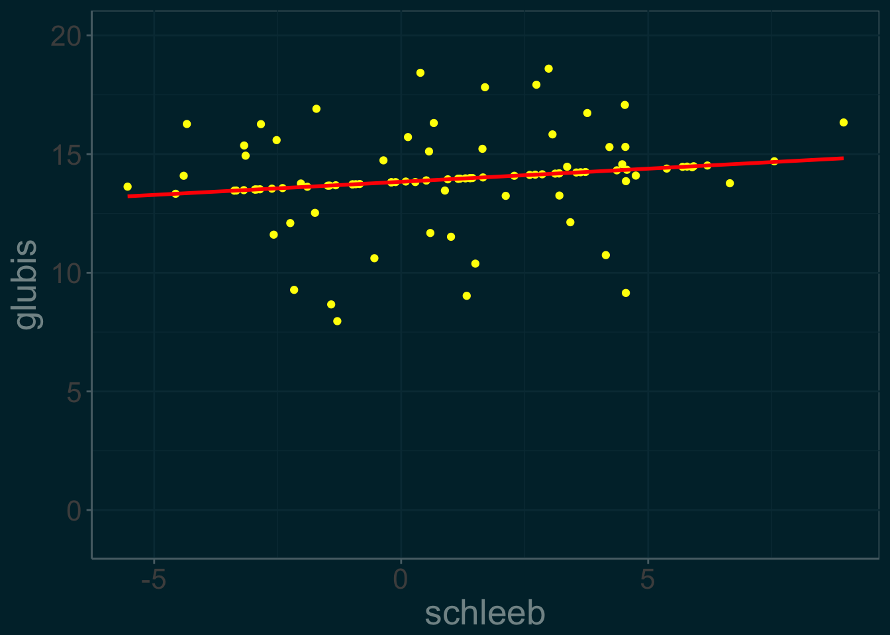
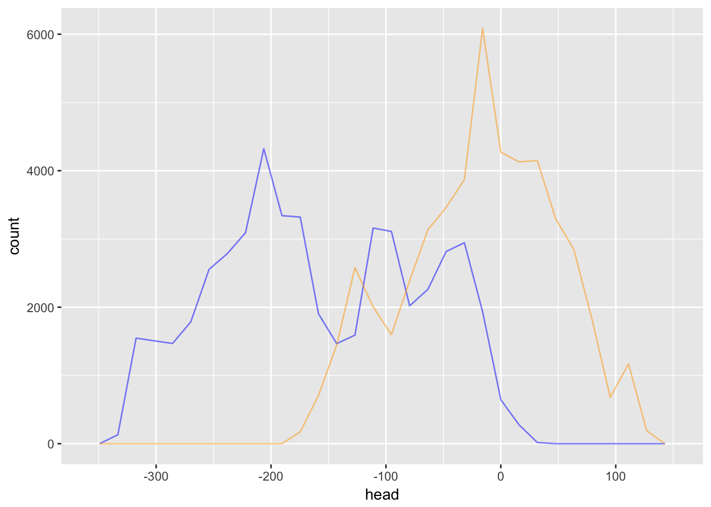
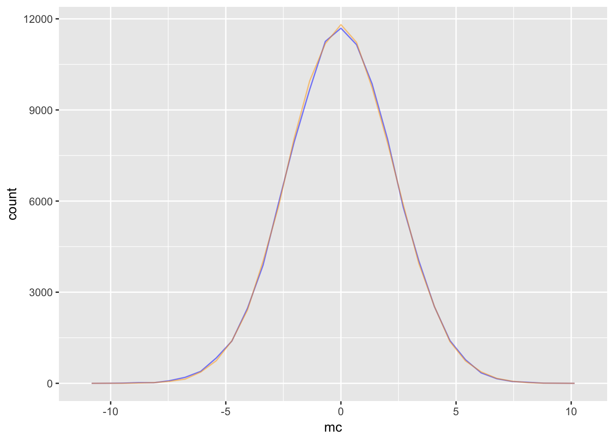
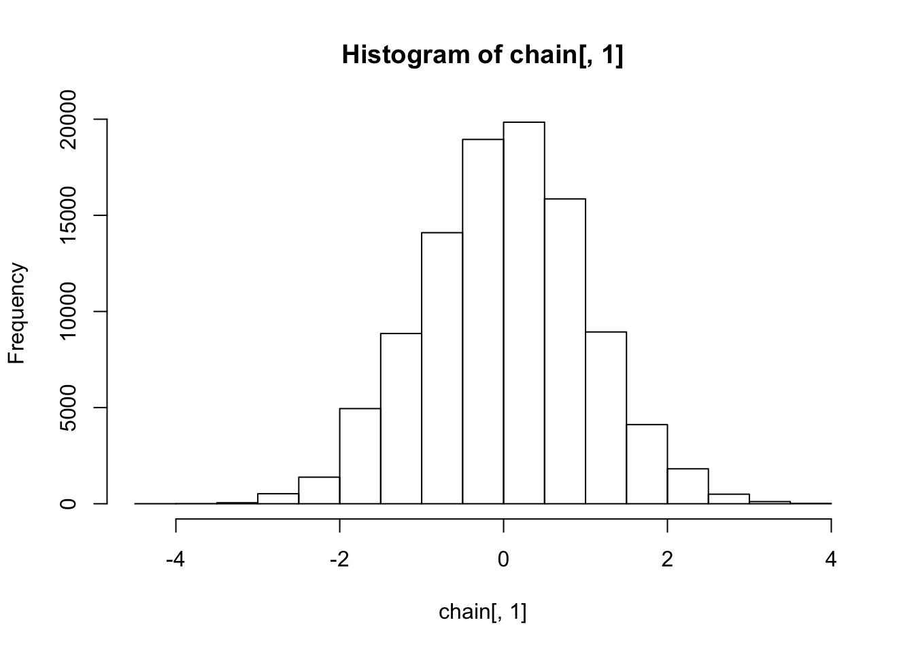
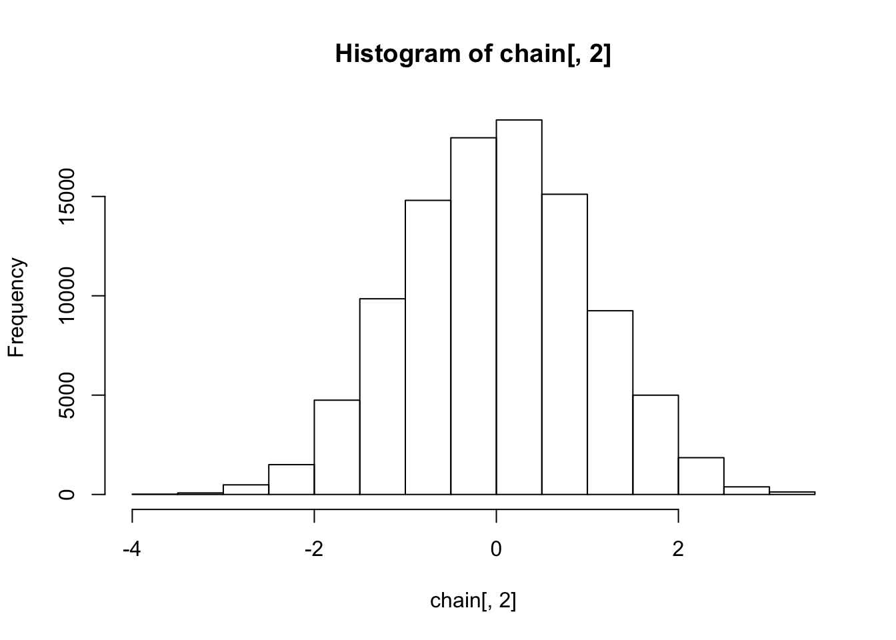
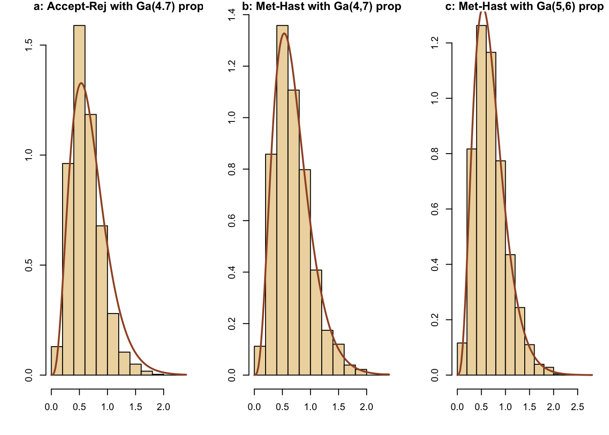
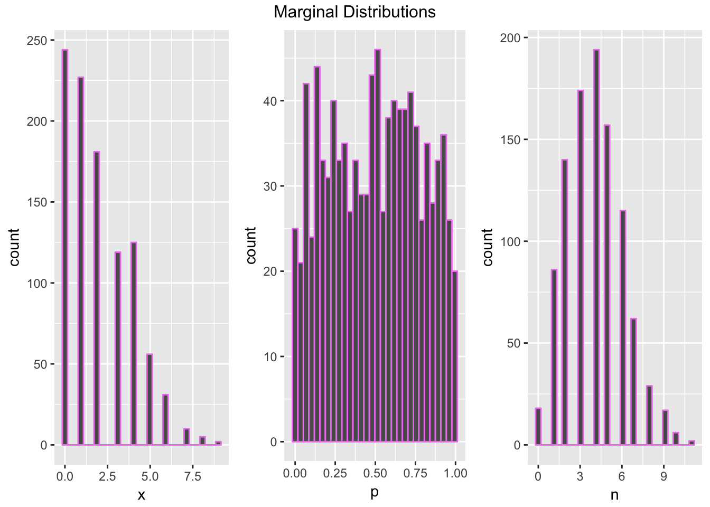

Simulation
Harrison Tietze
1 Methods of Generating Random Variables
1.1 Inverse Transform Method
Let’s simulate a random sample from a distribution with density \(f(x) = \frac{3}{32}x^5 \ \ \ 0<x<2\). We find the distribution to be \(F_X(x) = \frac{x^6}{64}\) and its inverse \(x= F^{-1}_X(u) = 2u^{\frac{1}{6}}\) where \(U \sim \text{Uniform}[0,1]\) by the probability integral transform. We can now sample values of x:
n <- 1000
u <- runif(n)
x <- 2*u^(1/6)
hist(x, probability = TRUE, main = expression(f(x)==textstyle(frac(3,32))*x^5))
y <- seq(0, 2, .01)
lines(y, 3/32 * y^5)
1.2 Understanding the Inverse Transform Method
How did we get this uniform random variable? There is a method to the madness.
Let’s take a look at our CDF:

Geometrically, we have a smooth mapping that is contracting the the interval \([0,2]\) to the interval \([0,1]\). However, this is not being done evenly. Let’s bin the x-axis into intervals of width \(.25\) and compute the direct image of each bin.
| bin | image | img_length |
|---|---|---|
| [0 , 0.25] | [0 , 0] | 0.000 |
| [0.25 , 0.5] | [0 , 0] | 0.000 |
| [0.5 , 0.75] | [0 , 0.003] | 0.003 |
| [0.75 , 1] | [0.003 , 0.016] | 0.013 |
| [1 , 1.25] | [0.016 , 0.06] | 0.044 |
| [1.25 , 1.5] | [0.06 , 0.178] | 0.118 |
| [1.5 , 1.75] | [0.178 , 0.449] | 0.271 |
| [1.75 , 2] | [0.449 , 1] | 0.551 |
We partition the domain into bins of equal length, which under the image of the CDF, paritions the interval \([0,1]\) into bins of very unequal length. If we then sample uniformly from the interval \([0,1]\) and return each point to its original bin (i.e take the inverse), we will end up with our original distribution

The image length is just the proportion of points sampled uniformly from [0,1] whose inverse falls into the specified bin.
1.3 Acceptance-Rejection Method
Suppose we are told that a coin is flipped 50 times, 10 of which land heads. We want to simulate a sample of possibles values for the bias of the coin. We can model our belief about the bias as a beta distribution with parameters a = 10 and b = 40 with density \[f(x) = \frac{49!}{9!39!}x^9(1-x)^{39}\] 
We will use the uniform distribution as our g(x) since it has the same domain and is easy to sample from. Now we solve for the threshold parameter c which satisfies: \[ \forall x \in [0,1]: \hspace{2mm} \frac{f(x)}{g(x)} = \frac{49!}{9!39!}x^9(1-x)^{39} < c\]. To solve for c, our graph of the density reveals we should choose the mode of the distribution for our choice of x. which has a convenient formula: \[mode = \frac{(a-1)}{(a+b-2)}\]
The mode of the beta distribution is 0.1875 and we calculate that c = 7.159. It follows that a random x from g(x) is accepted if \[\frac{f(x)}{cg(x)} = \frac{\frac{49!}{9!39!}x^9(1-x)^{39}}{7.159} > u\]
for some random uniform u.
n <- 1000 #target sample size
k <- 0 #counter for accepted
j <- 0 #iterations
y <- numeric(n)
acceptance_ratio <- function(x){beta_density(x)/my_c}
while(k < n){
acceptance_threshold <- runif(1)
j <- j + 1
x <- runif(1) #random variate from g
if(acceptance_ratio(x) > acceptance_threshold){
#accept x
k <- k + 1
y[k] <- x
}
}In this simulation, j = 7177 iterations were required to generate a sample of n = 1000 variates, compared to the expected \(cn =\) 7159 iterations. Comparing the empirical and theoretical deciles confirms that our sample fits the beta distribution.
| 10% | 20% | 30% | 40% | 50% | 60% | 70% | 80% | 90% | |
|---|---|---|---|---|---|---|---|---|---|
| Qsim | 0.1315288 | 0.1525328 | 0.1681874 | 0.1816580 | 0.1967094 | 0.2097532 | 0.2256079 | 0.2427806 | 0.2769144 |
| Q | 0.1308707 | 0.1515751 | 0.1675891 | 0.1819719 | 0.1959798 | 0.2105138 | 0.2266215 | 0.2461659 | 0.2744112 |
1.4 Convolutions
Let \(X_1 \dots X_n\) be an i.i.d list of random variables such that \(X_j \sim X\). The distribution of their sum \(S = X_1 + \dots + X_n\) is called the n-fold convolution of \(X\) and has distribution \(F^{*(n)}_X\). For exapmle, the chi-squared distribution with degree of freedom \(\nu\) is the \(\nu\)-fold convolution of squared standard normals. Let’s use this fact to simulate a random sample of size \(n\) from a \(\chi^2_{\nu}\) distribution.
library(tidyverse)
n <- 1000
nu <- 6
X <- matrix(rnorm(n*nu), n, nu)^2
y <- rowSums(X)
comp <- data.frame(
theoretical = c(nu, 2*nu),
empirical = c(mean(y), mean(y^2) - (mean(y))^2),
row.names = c("mean", "variance")
)
knitr::kable(comp)| theoretical | empirical | |
|---|---|---|
| mean | 6 | 6.25575 |
| variance | 12 | 12.54616 |
We have accurately generated a chi-squared random sample.
1.5 A Mixture of Gammas
A discrete mixture of random variables has a distribution \[F_X = \sum_{j=1}^n\theta_j F_{X_j}\] where our weights \(\theta_j\) sum to 1 and \(X_1 \dots X_n\) is any sequence of random variables.
Here I will investigate the behavior of a specific mixture of gamma random variables given by \[X_j \sim \text{Gamma}(r,\ \lambda_j = \frac{1}{j})\] \[\theta_j = \frac{2j}{n(n+1)}\] \[1\leq j \leq n\]. Our mixed random variable is \(Y_n\) with distribution \[F_{Y_n} = \sum_{j=1}^n\theta_j F_{X_j}\]
I will simulate from mixtures of different sizes. Notice that in our mixture, the contribution of variables appearing later in the sequence is much higher than that of the previous ones. I hyopthesize that as \(n\) increases, \(F_{Y_n} \rightarrow F_{X_n}\).
library(tidyverse)
N <- 1000 # sample size
n <- 50
r <- 3
gamma_mixture <- function(n = 50, r = 3, N = 1000){
# n is the number of variables we are mixing
# N is the sample size we a generating
index <- 1:n
weights <- index/((n*(n+1))/2)
index_sample <- sample(index, size = N, replace = TRUE, prob = weights)
lambda <- 1/index_sample
mixture_sample <- rgamma(N, shape = r, rate = lambda)
mixture_sample
}
sizes <- c(50, 200, 1000)
sizes %>%
map(function(x) gamma_mixture(n = x)) ->
mixture_list
sizes %>%
map(function(x) rgamma(N, shape = r, rate = 1/x)) ->
gamma_list
df <- tibble(
data = c(mixture_list, gamma_list),
n_size = rep(sizes, times = 2),
distribution = factor(rep(c("mixture", "gamma"), each = 3), levels = c("mixture", "gamma"))
)
library(magrittr)
library(scales)
df %<>% unnest()
ggplot(data = df, aes(x = data)) +
geom_density(position = "stack", aes(color = distribution)) +
scale_x_continuous(breaks = scales::pretty_breaks(n = 3)) +
facet_grid(. ~n_size, scales = "free", labeller = label_bquote(cols = n == .(n_size)))
The graphs supports our hypothesis that the similarity between the distributions of \(Y_n\) and \(X_n\) gets stronger as \(n\) increases. You can see the sharp peak of the mixture distribution rapidly flattens out to match the gamma distribution. Note the variance of a gamma random variable \(X_n\) with rate parameter \(\frac{1}{n}\) and shape parameter \(r\) is \[ Var[X_n] = n^2r\]
so the variance increases exponentially with our choice of \(n\), flattening out the graph. In contrast, our gamma mixture takes contributions from all \(X_{1\leq j\leq n}\) so it will have less variance and thus a sharper peak.
See:
Rizzo: Statistical Computing With R (2007) Chapter 3: Methods of Generating Random Variables
2 Monte-Carlo Integration
2.1 Simple Monte Carlo Integration
We can use random number generation to estimate the integral of a function that would be difficult to solve analytically. In this case the quantity we want to estimate is really the value of an integral \(\theta = \int_{\chi}g(x)dx\). The connection between generic integrals and random variables is given by the definition of expectation of a transformed random variable. Recall that if \(X\) is a random variable with density \(f(x)\), then the mathematical expectation of the transformed random variable \(g(X)\) is \[ \mathbb{E}_f[g(X)] = \int_{\chi}g(x)f(x)dx\] where \(\chi\) is the support of the density \(f\). A simple case occurs when integrating a function \(g(x)\) over \([0,1]\) because we can choose \(X \sim \text{Uniform}[0,1]\). \[\theta = E[g(X)] = \int_0^1g(x)(1)dx = \int_0^1g(x)dx\] We can then generate a random sample of uniforms \(X_1 \dots X_m\) to get the monte-carlo estimate of \(\theta\) using the sample mean: \[\widehat{\theta}_{MC} = \widehat{\mathbb{E}_f[g(X)]} = \frac{1}{m}\sum_{i=1}^mg(X_i)\] Since \(X_1 \dots X_n\) is an i.id sample, by the law of large numbers, the sample mean converges to the true expected value. \[P\bigg(\lim_{m\rightarrow \infty}\left| \frac{1}{m}\sum_{i=1}^mg(X_i) - E[g(X)]\right|<\epsilon \bigg) = 1\] So we can expect that our estimate will approximate \(\theta\) given a large enough sample. Let’s use this to estimate \[\theta = \int_0^1 e^{-x}dx\] and compare the estimate with the exact value.
m <- 10000
x <- runif(m)
theta.hat <- round(mean(exp(-x)),6)
soln <- round(1-exp(-1),6)
st_err <- format((1/m)*(sum(exp(-x)-theta.hat)^2)^(1/2), digits = 3)The estimate is \(\widehat{\theta}=\) 0.631785 and \(\theta = 1 -e^{-1}\) = 0.632121.
2.2 Estimating Standard Error
We can quantify the accuracy of our estimate. Note that in statistical parlance \(\theta\) is a parameter we want to estimate, and our estimator is a sample statistic \[\widehat{\theta}_m = T(g(X_1), \dots g(X_m))\] The population distribution of our sample statistic is called the sampling distribution. We want to find the standard deviaton of the sampling distribution called the standard error, denoted \(SE(\widehat{\theta}_m)\). Since our estimator is a sample mean from the distribution of \(g(X)\), we can estimate the standard error with \[SE(\widehat{\theta}_m) = \frac{\widehat{\sigma}}{\sqrt{m}} = \frac{1}{m}\left\{\sum_{i=1}^m|g(x_i)-\overline{g(x)}]^2\right\}^{\frac{1}{2}}\]
Using this formula we calculate \(SE(\widehat{\theta}_{10^5})\) = 4.61e-07 for the previous example.
2.3 General Monte-Carlo Integration
We need not limit ourselves to uniform random variables for our monte-carlo estimator. Suppose we want to estimate the quantity \(\theta = \int_{\chi}g(x)dx\). We can look for a random variable \(X\) with pdf \(f\) that is supported on \(\chi\) and easy to sample from. Then we define the transformation \(h(X) = \frac{g(X)}{f(X)}\). Taking the expectation gives us\[ \mathbb{E}_f[h(X)] = \int_{\chi}\frac{g(x)f(x)}{f(x)}dx = \int_{\chi}g(x)dx\] We can get a monte-carlo estimate of \(\theta\) using a sample of random variables \(X_1, \dots, X_m\) generated from \(f\), tranforming them by \(h\), and tking the mean: \[\widehat{\theta}_{MC} = \widehat{\mathbb{E}_f[h(X)]} = \frac{1}{m}\sum_{i=1}^m\frac{g(X_i)}{f(X_i)}\] Note that the example in (2.1) is special case where \(f(X_i) = 1\) because we are using uniform random variables. In this example we will consider a function defined on an infinite domain, so we cannot choose any uniform pdf for our \(f\). Consider \[\int_0^{\infty}\sin(x^2)e^{-x^2}dx\] If we choose \(X \sim \exp(\lambda = 1)\) then \(f(x) = e^{-x}\) on \(x\geq 0\) and \[h(x) = \frac{\sin(x^2)e^{-x^2}}{e^{-x}} = \sin(x^2)e^{-x^2 + x}\]
m <- 10^5
sample <- rexp(m, rate = 1)
h <- function(x){
sin(x^2)*exp(-x^2 + x)
}
estimate <- sum(h(sample))/mOur Monte Carlo estimate \(\widehat{\theta}_{MC}\) = 0.2853661 approximates the true value determined by Mathematica:
\[\pmb{\text{}}\\ \pmb{\text{Integrate}\left[\text{Sin}[x{}^{\wedge}2]*e^{-x^2}, \{x, 0 , \text{Infinity}\}\right]} = \frac{\sqrt{\pi } \ \text{Sin}\left[\frac{\pi }{8}\right]}{2\ 2^{1/4}} = 0.285185\]
See:
Chihara, Hesterberg: Mathematical Statistics with Resampling and R (2012) Chapter 11.6: Monte Carlo Integration
2.4 Importance Sampling
Given a density \(g\) that is strictly positive on the supported domain of \(h\times f\) , we can write \[\mathbb{E}_f[h(X)] = \int_{\chi}h(x)\frac{f(x)}{g(x)}g(x)dx = \mathbb{E}_g\left[\frac{h(X)f(X)}{g(X)}\right]\]
Instead of sampling from a pdf \(f\) we will can sample from a pdf \(g\). This importance sampling fundamental identity justifies the use of the estimator \[\widehat{\mathbb{E}_f[h(X)]} = \frac{1}{m}\sum_{j=1}^m\frac{h(X_j)f(X_j)}{g(X_j)}\] based on a sample generated from \(g\).
3 Numerical Algorithms
3.1 EM algorithm: Faking data with Rick and Morty
Rick and Morty have just returned from an off-world adventure on alien exoplanet DW7449 where they were retreiving slime samples from Type III Lazy Slug, a possible candidate for a new flavor of Sechuan Sticky Sauce. Two important flavor variables they need to measure are the slime’s schleeb and its glubis which are known to be normally distributed. While taking measurements in Rick’s workshop, Morty slipped on a slime patch crashing into the samples, corrupting the data before they could finish recording the glubis. Fortunately, Rick had already predicted that a typical Morty-related disaster would occur, and had preprogrammed an EM algorithm to rescue the lost data. Let’s investigate what he did.
library(ggthemes)
library(MASS)
set.seed(3)
n <- 100 #sample size
d <- 2 #dimension
mu <- c(1,14) #vector of means
SIGMA <- matrix(c(12,3,3,6), ncol = 2, byrow = TRUE)
slime_data <- data.frame(mvrnorm(n, mu, Sigma = SIGMA))
names(slime_data) = c("schleeb", "glubis")
lost_data <- sample(1:n, size = n/2)
slime_data[lost_data, 2] <- 0 #Set the lost data values to 0
slime_plot <- ggplot(slime_data, aes(schleeb, glubis)) +
geom_point(color = "yellow") +
theme_solarized(light = FALSE) +
theme(text = element_text(size=20, color = "green")) +
stat_smooth(method = "lm", color = "red", se = FALSE) +
coord_cartesian(ylim = c(-1,20))This first step in the EM algorithm is create an artificially complete data set by arbitrarily setting the missing glubis values to 0. We call this dataset \(slime^{(0)}\) it is plotted below. We don’t expect the regression line to be accurate.
slime_plot
We know the slime data comes from a bivariate normal distribution with parameters \(\theta = (\mu_1, \mu_2, \sigma_1, \sigma_2, \rho)\). To get maximum likelihod estimates for \(\mu_2, \sigma_2\), and \(\rho\) we need to properly fill in the missing data for the glubis.
To get one interation of the EM algorithm we can use maximum likelihood estimators to produce an estimate for \(\widehat{\theta}^{(0)} = (\mu_1^{(0)}, \mu_2^{(0)}, \sigma_1^{(0)}, \sigma_2^{(0)}, \rho^{(0)})\) This is the M(“Maximization Step”)
#construct a function that computes MLE's
theta_hat_estimator <- function(schleeb = slime_data$schleeb, glubis = slime_data$glubis){
mu_1 <- mean(schleeb)
mu_2 <- mean(glubis)
sigma_1 <- sd(schleeb)
sigma_2 <- sd(glubis)
rho <- cor(schleeb,glubis)
return(c(mu_1, mu_2, sigma_1, sigma_2, rho))
}We can now impute the missing values using the formula for conditional expectation of a bivariate normal variable where \(\theta = \widehat{\theta}^{(0)}\). This is the E“Expectation” step : \[\mathbb{E}[x_{2i}|\widehat{\theta}^{(0)}] = \mu_2^{(0)} + \rho^{(0)}\frac{\sigma_2^{(0)}}{\sigma_1^{(0)}}(x_{1i} - \mu_1^{(0)}) \]
#construct a function to update the slime data from slime_j -> slime_j+1
impute_glubis <- function(x_1, mu_1, mu_2, sigma_1, sigma_2, rho){
mu_2 + rho*(sigma_2/sigma_1) * (x_1 - mu_1)
}The E and M steps are repeated giving a new dataset \(slime^{(j)}\) at the \(j^{th}\) stage and updating the parameter estimate \(\widehat{\theta}^{(j)}\) until reaching some convergence threshold \(||\widehat{\theta}^{(j+1)} - \widehat{\theta}^{(j)}|| < \epsilon\).
#Run the EM algorithm
epsilon <- .000005 # convergence threshold
theta_hat_0 <- rep(0,5) #initialize temp variable
theta_hat_1 <- theta_hat_estimator(slime_data$schleeb, slime_data$glubis)
var_path <- c(0,theta_hat_1)
step = 1
condition <- function(){
#convergence condition
sqrt(sum((theta_hat_1 - theta_hat_0)^2)) > epsilon
}
while(condition()) {
#EM algorithm
slime_data[lost_data, 2] <- impute_glubis(slime_data[lost_data, 1], theta_hat_1[1], theta_hat_1[2], theta_hat_1[3], theta_hat_1[4], theta_hat_1[5])
theta_hat_0 = theta_hat_1
theta_hat_1 = theta_hat_estimator(slime_data$schleeb, slime_data$glubis)
var_path = rbind(var_path, c(step, theta_hat_1))
step = step + 1
}
knitr::kable(var_path, booktabs = F, align = c("c"),
col.names = c("step", "$\\mu_1$", "$\\mu_2$", "$\\sigma_1$", "$\\sigma_2$", "$\\rho$")
)| step | \(\mu_1\) | \(\mu_2\) | \(\sigma_1\) | \(\sigma_2\) | \(\rho\) | |
|---|---|---|---|---|---|---|
| var_path | 0 | 0.9787029 | 6.987215 | 3.081482 | 7.259808 | 0.1191515 |
| 1 | 0.9787029 | 10.440005 | 3.081482 | 4.038984 | 0.2198468 | |
| 2 | 0.9787029 | 12.165318 | 3.081482 | 2.649032 | 0.2766403 | |
| 3 | 0.9787029 | 13.035294 | 3.081482 | 2.121314 | 0.2766010 | |
| 4 | 0.9787029 | 13.477175 | 3.081482 | 1.944324 | 0.2495371 | |
| 5 | 0.9787029 | 13.702908 | 3.081482 | 1.887004 | 0.2238040 | |
| 6 | 0.9787029 | 13.818741 | 3.081482 | 1.867507 | 0.2065273 | |
| 7 | 0.9787029 | 13.878386 | 3.081482 | 1.860207 | 0.1962670 | |
| 8 | 0.9787029 | 13.909180 | 3.081482 | 1.857164 | 0.1904945 | |
| 9 | 0.9787029 | 13.925111 | 3.081482 | 1.855776 | 0.1873364 | |
| 10 | 0.9787029 | 13.933366 | 3.081482 | 1.855101 | 0.1856364 | |
| 11 | 0.9787029 | 13.937648 | 3.081482 | 1.854762 | 0.1847306 | |
| 12 | 0.9787029 | 13.939871 | 3.081482 | 1.854587 | 0.1842511 | |
| 13 | 0.9787029 | 13.941026 | 3.081482 | 1.854497 | 0.1839985 | |
| 14 | 0.9787029 | 13.941626 | 3.081482 | 1.854449 | 0.1838658 | |
| 15 | 0.9787029 | 13.941939 | 3.081482 | 1.854425 | 0.1837963 | |
| 16 | 0.9787029 | 13.942101 | 3.081482 | 1.854412 | 0.1837600 | |
| 17 | 0.9787029 | 13.942186 | 3.081482 | 1.854405 | 0.1837410 | |
| 18 | 0.9787029 | 13.942229 | 3.081482 | 1.854402 | 0.1837310 | |
| 19 | 0.9787029 | 13.942252 | 3.081482 | 1.854400 | 0.1837259 | |
| 20 | 0.9787029 | 13.942264 | 3.081482 | 1.854399 | 0.1837232 | |
| 21 | 0.9787029 | 13.942270 | 3.081482 | 1.854398 | 0.1837218 | |
| 22 | 0.9787029 | 13.942274 | 3.081482 | 1.854398 | 0.1837210 |
The last line in our table corresponds to the final estimates of our parameters.
slime_plot %+% slime_data
This is a plot of Rick’s reconstructed data: \(slime^{(22)}\). Notice how the imputed data points lie along the regression line- since they were computed using conditional expectation, this is to by design.
See:
Efron, Hastie: Computer Age Statistical Inference: Algorithms, Evidence, and Data Science (2016) chapter 9: Survival Analysis and the EM algorithm
4 Markov Chain Monte Carlo
4.1 Markov Chain theory
Estimation can become complicated in higher dimensions. Given a high-dimensional probability density, we may not be able to visualize a proposal distribution that matches it well enough to draw i.i.d samples from and hope they coincide with the target density. Instead, we can use dependent sampling, where our next sample draw is intended to visit some area of high probability in the density, based off our knowledge of the previous draw. Sampling in this way gives a Markov Chain. However, we can no longer rely on the law of large numbers for convergence, but instead we have ergodic theorems which give similar asymptotic results for Markov Chains. To be ergodic, the MC must have certain nice properties:
-Every state must be accessible by the Markov Chain. Suppose we have a discrete Markov chain \(X = (X_0, X_1, \dots )\) that has state space \(S = \{1, \dots, m\}\). We want that starting from any state, we have a non-zero probability of eventually reaching any other state. That is, the transition probability \(P_{ij} = P(X_{n+1} = j|X_n = i) > 0\) For some time step \(n\). This means the MC has a “regular” \(m\times m\) transition matrix P, so for some power \(\textbf{P}^n\), the entry \(P_{ij}\) will be positive. -Each state must also be recurrent: once the markov chain visits that state, the chain it “regenerates”" itself and has a probability of visiting it some time in the future again. Thus the chain will visit that state infinitely many times; however, the proportion of visits will be different for each sate. -Additionally the chain must be aperiodic, which means it cannot get stuck in an infinite loop of visiting certain states back and forth.
If we draw a sample from this ergodic chain, it will reach a unique limiting stationary distribution \(\pi = (\pi_1,\dots, \pi_m)\) which describes the on-average chance of being in one state at any given time-step. Since this distribution stays the same over time, we get convergence of the Markov Chain- a histogram of the chain at sample size \(n = 10^5\) should match the histogram at \(n = 10^7\), which will reflect the proportion of times the markov chain visits each state as given by the limiting distribution. Using a sample from an ergodic MC is fundamentally identical to an i.i.d sample, so the ergodic theorem gives us the same result as the law of large numbers: \(\frac{1}{N}\sum_{i=1}^Nh(X_i) \approx E_f[h(X)]\) where \(f\) is the limiting distribution.
We can also use a continuous-state markov chain with an uncountable state space \(\chi\) and a conditional distribution called the transition kernel \(\mathcal{K(x,y)}\) which gives the probability of transitioning from state \(x\) to state \(y\), defined on \(\chi \times \chi\) with the property that \(\mathcal{K}(x,\centerdot) >0\) on its support (i.e all the states are accessible). A Monte Carlo method for simulating a distribution \(f\) is to sample from an ergodic markov chain whose transition kernel converges to \(f\). The result is a sample \(X_1, \dots, X_N\) approximately distributed from \(f\) without having to directly simulate from \(f\) itself!
See:
Dobrow: Introduction to Stochastic Processes with R (2016) Chapter 3: Markov Chains for the Long Term
Robert, Casella: Monte Carlo Statistical Methods (2004) Chapter 7.1: The MCMC Principle
4.2 Simulating a Random Walk
A simple random walk is a markov chain \[X^{(t+1)} |X^{(0)},\dots, X^{(t)} \sim \mathcal{K}(X^{(t)},X^{(t+1)})\] that satisfies \(X^{(t+1)} = X^{(t)} + \epsilon_t\), where \(\epsilon_t\) is independent gaussian noise \(\epsilon_t\sim\mathcal{N}(0,1)\). Then the transition kernel \(\mathcal(K) \sim \mathcal{N}(X^{(t)},1)\)
It turns out, the simple random walk does not converge, so it cannot be described by a stationary distribution.
t <- 10^5
rho <- 1
markov_chain <- numeric(t)
markov_chain[1] = rnorm(1)
for(i in 2:t){
markov_chain[i] <- rnorm(n = 1, mean = markov_chain[i-1] * rho, sd = 1 )
}
mc_frame <- data.frame(head = markov_chain[1:(10^5/2)],
tail = markov_chain[(10^5/2+1):10^5])
ggplot(data = mc_frame) +
geom_freqpoly(aes(x = head), col = "blue", alpha = .5) +
geom_freqpoly(aes(x = tail), col = "orange", alpha = .5) 
Since the head and tail of the random walk have completely different distributions, we can see that it won’t converge.
However, if we make a slight contraction, the random walk does in fact converge.
Consider the Markov Chain defined by \(X^{(t+1)} = \rho X^{(t)} + \epsilon_t\) where \(\epsilon_t\sim\mathcal{N}(0,1)\) Using \(\rho = .9\), we will show that the stationary distribution is \(\mathcal{N}\left(0, \frac{1}{1-\rho^2}\right)\).
t <- 10^5
rho <- .9
markov_chain <- numeric(t)
markov_chain[1] = rnorm(1)
for(i in 2:t){
markov_chain[i] <- rnorm(n = 1, mean = markov_chain[i-1] * rho, sd = 1 )
}
stationary_distribution <- rnorm(n = t, mean = 0, sd = sqrt(1/(1-rho^2)))
mc_frame <- data.frame(mc = markov_chain,
s_dis = stationary_distribution)
ggplot(data = mc_frame) +
geom_freqpoly(aes(x = mc), col = "blue", alpha = .5) +
geom_freqpoly(aes(x = s_dis), col = "orange", alpha = .5) 
Notice the the stationary distribution would not exist for the simple random walk: it is undefined for \(\rho = 1\).
See:
Robert, Casella: Introducing Monte Carlo Methods with R (2010) Chapter 6.2: A Peek at Markov Chain Theory
4.3 Random Walk Sampler
Here we use a random walk to generate a sample from a bivariate normal distribution. Though we already have ways to generate random multivaraite normals, this algorithm can be applied to sample from any exponential kernel.
We use a bivariate normal with mean 0 and standard deviation 3 multiplied by 2 to simulate the noise of the random walk. Increasing the noise of the walk can help explore the distribution faster, but may lead to more rejected proposals, slowing down convergence.
library(mvtnorm)
N <- 10^5
chain <- matrix(rep(0,N*2), nrow = N)
#initialize X_0
chain[1,] <- c(2,2)
#acceptance function
f <- function(x){ dmvnorm(x)}
acceptance <- function(y, x){
min(f(y)/f(x) , 1)
}
#generates candidate move
biv_rnorm <- function(){
rnorm(n = 2, sd = 3)
}
#sample the chain
for(t in 1:(N-1)){
X_t <- chain[t,]
Y <- X_t + 2 * biv_rnorm()
alpha <- acceptance(Y, X_t)
u <- runif(n = 1)
if(u < alpha){
chain[t+1,] <- Y
}
else{
chain[t+1,] <- X_t
}
}
hist(chain[,1])
hist(chain[,2])
The histograms show the marginal distributions are standard normal, as expected.
4.4 Metropolis Hastings
The original Metropolis Hastings algorithm was used to determine the ideal configuration of of a system of N particles. Let’s say each particle has a location in 2-dimensional space describes by \(r\) and \(s\) coordinates, and the state of the system is the coordinates of each particle at a given moment in time. A markov chain can describe the evolution of the system as it transitions from one particle configuration to the next. Assuming the particles are constrained in a unit square, a state vector would look like \(X = \{(r_1, s_1),\dots, (r_N,s_N)\}\in ([0,1]^2)^N\) distributed according the Boltzmann distribution \(\pi(x) = \frac{1}{z}e^{-\mathcal{E}(x)}\) where \(\mathcal{E}\) is an energy function of the state. Our goal is to sample from the Boltzmann distribution and find its expected value, so we can determine the ideal configuration of the system. However, \(z\) may be intractible and we don’t have a sampling procedure. Faced with this problem, the physicists Metropolis and Hastings invented one. Here’s how it works: we start with a target distribution \(\pi\) we want to sample from, and construct a transition kernel that converges to \(\pi\). We need a symmetric proposal transition matrix \(Q\) that suggests the next state of the Markov Chain based off the previous state. \(Q\) can be as simple as a uniform distribution that chooses a nearby configuration at random, as long as it gives an equal transition probability of reversing that configuration. The actual transition matrix of the Markov Chain \(X\) that we construct is given by \(T\) and has transition probability \(T(X_{n+1}|X_n) =\) (Probability that Q proposes transition to \(X_{n+1}=x^*\))(Probability that the transition to \(x^*\) is accepted) and define P(accept \(x^{*}|X_n\)) = min\(\{1, \frac{\pi(x^*)}{\pi(x)}\}\). If Q is symmetric, then \(X\) is time reversible and therefore ergodic with limiting distribution \(\pi\). Let’s illustrate that \(\pi\) is in fact the limiting distribution of T. Recall that a time-reversible Markov Chain is such that its stationary distribution satisfies the property of detailed balance: \(\pi_aT(a|b)=\pi_bT(b|a)\). In our example the proof hinges on the fact that we choose a symmetric proposal matrix Q. \[\pi_bT(a|b) \\ =\pi_bQ(a|b)\min\{1, \frac{\pi_a}{\pi_b}\}\\ = Q(a|b)\min\{\pi_b, \pi_a\} \\ = Q(b|a)\min\{\pi_b, \pi_a\} \\ = \pi_aQ(b|a)\min\{\frac{\pi_b}{\pi_a}, 1\} \\ = \pi_aT(b|a)\] Since \(T\) is time reversible, \(\pi\) is the unique limiting distribution of \(T\). This is the basis of the independence sampler algorithm.
See:
Mathematical Monk on MCMC
Robert, Casella Introducing Monte Carlo Methods with R (2010) Chapter 6: Metropolis-Hastings Algorithm
4.5 Comparison with Accept-Reject
Here is a comparison of simulations for a gamma(4.3,6.2) density using the following methods:
-a: accept-reject using a gamma(4,7) candidate
-b: Metropolis-Hastings using a gamma(4,7) candidate
-c: Metropolis-Hastings using a gamma(5,6) candidate
g47=rgamma(5000,4,7)
u=runif(5000,max=dgamma(g47,4,7))
x=g47[u<dgamma(g47,4.3,6.2)]
par(mfrow=c(1,3),mar=c(4,4,1,1))
hist(x,freq=FALSE,xlab="",ylab="",col="wheat2",
main="a: Accept-Rej with Ga(4.7) prop")
curve(dgamma(x,4.3,6.2),lwd=2,col="sienna",add=T)
a <- length(x)/5000
X=rep(0,5000)
X[1]=rgamma(1,4.3,6.2)
for (t in 2:5000){
rho=(dgamma(X[t-1],4,7)*dgamma(g47[t],4.3,6.2))/
(dgamma(g47[t],4,7)*dgamma(X[t-1],4.3,6.2))
X[t]=X[t-1]+(g47[t]-X[t-1])*(runif(1)<rho) #move to g47[t] if it is accepted, otherwise stay
}
hist(X,freq=FALSE,xlab="",ylab="",col="wheat2",
main="b: Met-Hast with Ga(4,7) prop")
curve(dgamma(x,4.3,6.2),lwd=2,col="sienna",add=T)
b <- length(unique(X))/5000
g56=rgamma(5000,5,6)
X[1]=rgamma(1,4.3,6.2)
for (t in 2:5000){
rho=(dgamma(X[t-1],5,6)*dgamma(g56[t],4.3,6.2))/
(dgamma(g56[t],5,6)*dgamma(X[t-1],4.3,6.2))
X[t]=X[t-1]+(g56[t]-X[t-1])*(runif(1)<rho)
}
c <- length(unique(X))/5000
hist(X,freq=FALSE,xlab="",ylab="",col="wheat2",
main="c: Met-Hast with Ga(5,6) prop")
curve(dgamma(x,4.3,6.2),lwd=2,col="sienna",add=T)
| Method | Efficiency |
|---|---|
| a | 0.8432 |
| b | 0.7934 |
| c | 0.781 |
The three methods produce similar results.
Robert, Casella Introducing Monte Carlo Methods with R (2010) Chapter 6: Metropolis-Hastings Algorithm, exercise 6.9
4.6 Multi-stage Gibb’s sampler
The Gibb’s sampler is a method to sample from a multivariate distrubtion by generating a Markov Chain. Suppose we have \(m\)-dimensional random variable \(X = (X_1,\dots,X_m) \sim \pi\). The Gibb’s sampler samples from the full conditionals of \(\pi\): \(\pi(X_1|X_2, \dots X_m)\), \(\pi(X_2|X_1, X_3, \dots, X_m)\), \(\dots\), \(\pi(X_m|X_1,\dots ,X_{m-1})\) to generate a Markov Chain whose target distribution is \(\pi(X)\). It turns out the Gibb’s Sampler is a special case of Metropolis-Hastings where the probability of accepting the proposed state is always 1. The proposed state is determined iteratively sing the full conditional distributions. If we initialize the first state as \((x^{(0)}_1,\dots, x^{(0)}_m\)), we have \(x^{(1)}_1\sim P(X_1|x^{(0)}_2, \dots, x^{(0)}_m)\). Then update the current state with \(x_1^{(0)} \rightarrow x_1^{(1)}\) and sample the next dimension \(x^{(1)}_2\sim P(X_2|x_1^{(1)}, x^{(0)}_3, \dots, x^{(0)}_m)\). Keep in mind that the superscript is the time-step and the subscript is the dimension. We iterate \(m\) times to generate the proposal for the next state, which is then accepted automatically, and repeat to get a sample. The sample we generate is a Markov Chain with limiting distribution \(\pi\), which is the target distribution. The advantage of the Gibb’s sampler is that it can sample from a high-dimensional density using univariate densities, simplifying the problem. Of course, we will need to be able to determine the conditional distributions before we can sample from them.
We will implement the Gibb’s sampler to simulate the following density: \[\pi(x, p, n) \propto \binom{n}{x} p^x(1-p)^{n-x}\frac{4^n}{n!}\] where \(x, n \in \mathbb{Z}_{\geq0}\) and \(p\in (0,1)\) To identify the conditional distributions, hold the two other variable constant, and we see that\[X| N=n, P=p \propto \text{binomial}(n, p)\] \[P|X = x, N= n \propto \text{beta}(x+1, n-x+1)\] \[N|P=p, X=x \propto Z + x \text{ where } Z\sim \text{poisson}(\lambda = 4(1-p))\]
N <- 10^3
sim <- matrix(rep(0,3*N),ncol=3)
#Initialize first state
sim[1, ] <- c(1,.5,2) #x, p, n
#Run Gibb's Sampler
for(i in 2:N){
sim[i,1] <- rbinom(1,sim[i-1,3],sim[i-1,2])
sim[i,2] <- rbeta(1,sim[i,1]+1,sim[i-1,3]-sim[i,1]+1)
sim[i,3] <- rpois(1,4*(1-sim[i,2]))+sim[i,1]
}
#plot marginal distributions
gibbs_sample <- data.frame(x = sim[, 1],
p = sim[, 2],
n = sim[, 3])
marginals <- list(NULL, NULL, NULL)
chart <- function(var){
ggplot(data = gibbs_sample, aes_(x = var)) + geom_histogram(color = "violet")
}
#note: the input to chart is a name, not a string
for(i in 1:3){
marginals[[i]] <- chart(as.name(names(gibbs_sample)[i]))
}
grid.arrange(marginals[[1]], marginals[[2]], marginals[[3]], ncol = 3, top = "Marginal Distributions")
See:
Dobrow: Introduction to Stochastic Processes with R (2016) chapter 5.3: gibb’s sampler